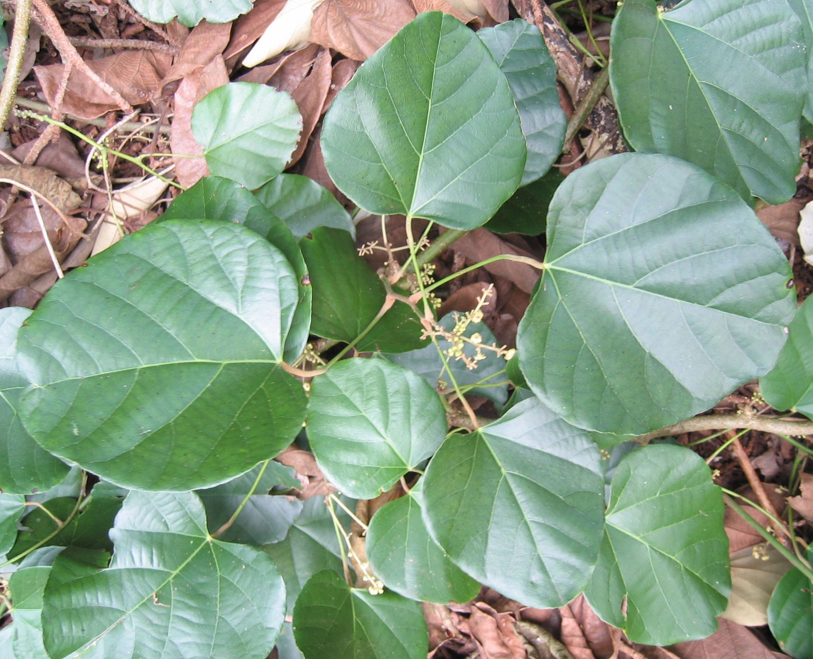

The plant and animal life in Guyana is extremely unique. It includes various one-of-a-kind species of flora and fauna,
where plants are not only used for the purpose of beautifying, but for medicine as well.

Leatherback Turtle: With a length from 1.8 to 2.2 meters, this turtle is the largest of all living turtles weighing from 250 to
700 kg as an adult. Their primary food is jellyfish along with mollusks, squid and sea urchins.
Sun Parakeet: Known as the sun conure, the sun parakeet is a medium-sized parrot that is vibrantly colored with a golden-yellow
plumage and orange-flushed face and underparts. It weighs about 100 grams with a length of 30 cm.

Jaguar: The jaguar is the 3rd largest of the big cats, after the tiger and the lion. It comes from the indigenous word "jaguar",
which translates to "he kills with one leap". They have the strongest jaw structure of any feline. Although their appearance is like the leopards,
their behavior is like the tigers.
Arapaima: This fish the the largest freshwater fish in the world. It weighs up to 440 pounds and up to 10 feet in length.
The arapaima is a very unique fish as it can breathe air. They can take up oxygen through their gills but live in oxygen poor waterways and
supplement with air breathing.

Capybara: This giant rodent is the largest living rodent in the word. Weighing up to 66 kg and a height of 64 cm, they are
known as strong swimmers like beavers. Their bodies are adapted for waterways in the forests, flooded savannahs and wetlands.
Black Caiman:Living up to 30 to 40 years in the wild, black caimans 14 feet in length. They are slower moving on land whereas
in the water, they can travel extremely fast despite their heavy bodies and slow metabolism.
Giant Anteater: Known as the ant bear, the giant anteater, like other anteaters, are edentate animals; they have no teeth. However,
their long tongues allow them to swallow about 35,000 ants and termites every day. They live an average of 15 years.
Harpy Eagle: Taller than bald eagles, harpy eagles measure a height of 41 inches and weighs up to 20 pounds. Their diet includes
tree-dwelling mammals such as sloths, monkeys, squirrels and iguanas. These eagles reside in the Amazon forest.
Cock-of-the-rock: This bird gets it name from its tendency to build nests on rocks and ledges. Their diet consists mainly of fruit
and insects and small reptiles. They have a number of predators including jaguar, puma and the ocelot.
Giant River Otter: This otter is the longest member of the weasel family, reaching up to 1.7 metres. They are excellent swimmers
and divers because of their short, webbed feet and flattened tail. They have small ears and nostrils which close after diving under water.
❮
❯
Victoria Regia Lily: Seen on the Guyana Coat of Arms, this is the national flower of Guyana. It is the largest of water lilies.
Their leaves are extremely strong and can hold a small human weighing up to 65 pounds.
Cannonball Tree: This tropical tree is large and deciduous and can grow up to 35 metres in height. Its fruit can be eaten by
humans but it is not generally done as it has an unpleasant smell. However, they are fed to livestock.
Sacred Lotus: This lotus is regarded as sacred in India, Guyana and Egypt.It symbolizes the purity of heart and mind and
represents long life, health and good luck. The leaves are used in Guyana as plates by Hindus in religious processes.
Carrion-Crow Bush: Also known as a medicinal plant, this bush is an ornamental flowering plant. It is also known as the
emperor's candlesticks and ringworm shrub.

Wakenaam Lilac: Jacaranda, known as the Wakenaam lilac in Guyana, has a mild sweet honey smell. However when dropped on
sidewalks, they can become slippery when smeared.
Staghorn: This type of fern is known for its uniquely shaped fronds. With proper care, they can live up to 90 years of age.
Maidenhair: This type of fern is known for its fronds to shed water without becoming wet. Their intolerance to dry soil is
what causes them to shrivel up and die.
❮
❯
Fever Grass: Widely known as lemon grass, this plant's leaves and oil are used to make medicine. It treats stomach aches,
high blood pressure, vomiting, achy joints, fever, the common cold and exhaustion.
Granny Backbone: This is a climbing fern where the leaves and stems are used to make a herbal bark tonic. This tonic
treats erectile dysfunction.
Sarsaparilla: Known as a soft drink similar to root beer, this plant is also used for treating psoriasis, rheumatoid
arthritis and kidney disease.

Curare: found in the amazonian basin, this plant is used a muscle relaxant is used in anesthesia.